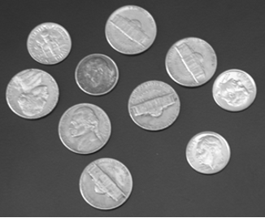
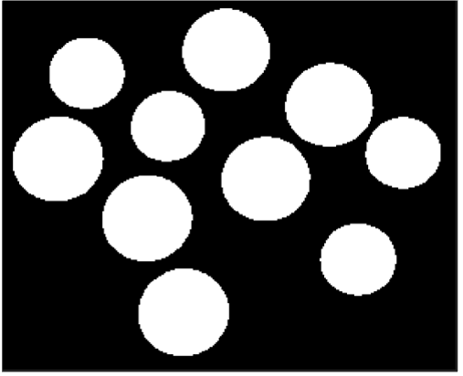

AI Recipe Generator
Developed a simple system that uses Large Language Models (LLMs) to suggest cooking recipes based on user input.
Developed a simple system that uses Large Language Models (LLMs) to suggest cooking recipes based on user input.
A digital image processing project developed in MATLAB to detect and count coins in an image and classify them into small and large categories. The system applies grayscale conversion, Otsu thresholding, binary segmentation, connected component analysis, and diameter-based classification.

